香港の空港のおとなり大嶼山（LantauIsland)の寶蓮寺。
世界最大級の大仏が鎮座しているこの寺には以前も訪れたことがある。
その時は東涌という駅からバスに乗って急な山道をバスが黒煙を吐きながら時速3キロほどのスピードでのろのろ登っていく、という悪夢のようなアクセスしかなかったのだ。
しかし！
なんと東涌から山頂の大仏さんまで一気にロープウェイで直結されているではないか！
恐らく当サイトでこの寺を取り上げたため一躍人気スポットに昇格したのではないかと思われる。
ロープウェイの名は昂坪360（NgongPing360）。長さ5.7キロ。今まで急な山道をノロノロ迂回して1時間ほどかかっていたバス路線に比べて所要時間約20分。
早いし、景色いいし、酔わないし、値段が高いことを除けば最高にご機嫌な大仏アプローチなのである。
ただし…
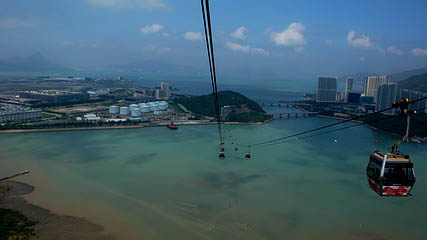
ご覧のように海の上をかなりの高度で移動する。
高所恐怖症の方はバスでのんびりと行くのが吉でしょう。
ちなみに以前ゴンドラが落下する事故があって、しばらく運行が停まっていたりしたので高度と同時に精神的に軽くプレッシャーがかかります。
あまりの高さにギャーギャー言いながら乗っていると、対面からこんな素敵なゴンドラがやって来た。
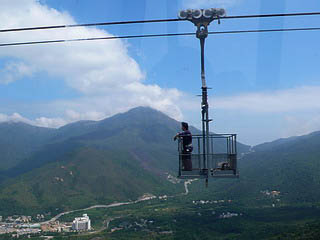
罰ゲーム専用ゴンドラでしょうか？（違う、違う）
海上から山間部に入りロープウェイはぐんぐん高度を上げてくる。
見下ろすと、登山道を歩いていく豪の者も結構いる。
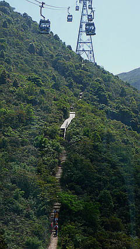
山中の所々にミサイルの発射口のようなものがある。
これは台湾、香港、大陸の華南地方で見られる墓だ。
沖縄などで目にされた方も多かろう。
気になったのは墓へ行く道が全然ない事。
一体どうやって墓参りとか行くんだろう…
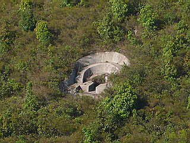
そんなこんなで幾つかの山を越えると大仏さんが見えてきた。
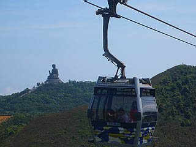
嗚呼、何て楽チンな大仏アプローチ。
しかも前回は見上げるばかりだった大仏さんと同じ高さでコンニチハ。
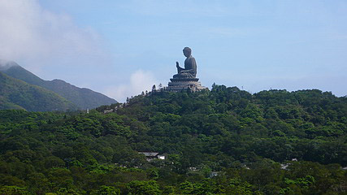
海あり山あり、あっという間の20分だった。
で、驚いたのが以前はひなびた土産物屋しかなかったのに飲食店やらグッズ屋やらがずらりと並ぶ中国っぽい街並みが。
おお、大仏テーマパークなり。
まるで大仏さんがシンデレラ城みたいになっちゃってるじゃない！
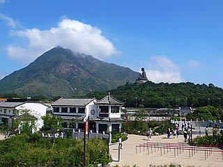
…ということは大仏Tシャツや大仏ノート、大仏バッグ…ひょっとして大仏プラモとか大仏クッションとか大仏型携帯電話とか大仏型バイクとかもあるかも…
などと若干興奮しつつ店を物色するが、品揃えはイマイチでした。
では食事は…大仏型のケーキや大仏型の点心や大仏型のカービングなどをチョッピリ期待したものの、私もいい大人なのでそんなモノはあるはずもない事は心のどこかで気付いているんですよ。実は。
まあ、実際はどこも混んでて味も微妙っぽい雰囲気でした。
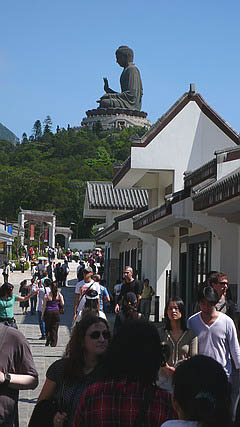
唯一気になったのがWalking with Buddhaというアトラクション。
仏陀の生涯を追体験するアトラクションだという。
おお。
これは大仏テーマパクらしいアトラクションじゃないか！
早速中に入ってみる。菩提樹の巨木（FRP製ですが）のある庭、お寺のような建物、むむむ期待が持てる、かも。
で、内部は撮影禁止だったので画像はないが…禁止じゃなくても撮らなかったかも、というほどつまらなかった。
俺はいいから仏サマに謝れ、とこの場を借りて言いたい。
というわけで世界最大級の天壇大仏。
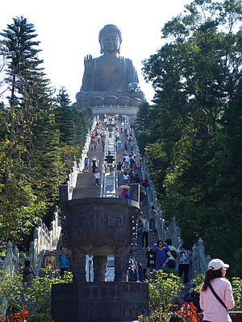
これはアトラクションではないのでお間違えのないように願います。
あ〜。でも、今やこの大仏さんもアトラクションみたいなものか。
そもそもお寺というもの自体がテーマパークのはしりみたいなものなのだから区別する必要もないのかもしれないし、ましてや大仏こそが信仰と娯楽の彼岸に立つ存在なわけだからどっちでもいいか。
大仏さんの先には心經簡林というスピリチュアルスポットがあるという。
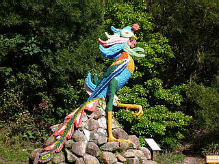
山道をしばらく歩くと素敵な孔雀オブジェがあり、小高い丘に出る。そしてそこにあったのは…
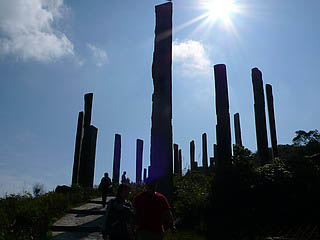
2001年宇宙の旅に出てくるモノリスを惹起させるその抽象的な風景。
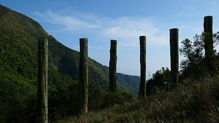
10メートルほどの木の柱が38本並んでいるという。
Google Earthで見たらこんな感じになってました。
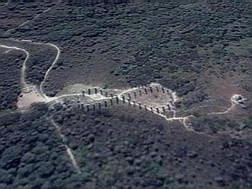
無限∞型に柱が並んでいるのがお判りだろうか。
柱は丸太を縦に裂いた状態になっており、その断面には文字が彫られている。
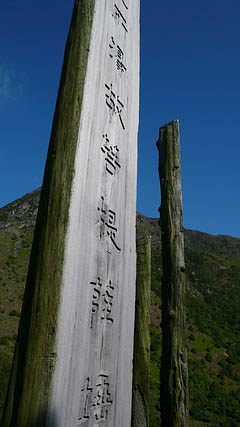 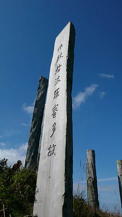
むむ。般若心経じゃないですか。
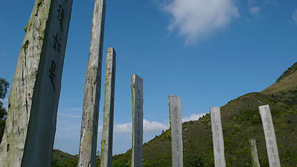
山一つ使って般若心経を表したモニュメント。
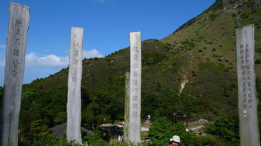
物凄く無駄っぽいが、あまりのバカバカしさに笑ってしまった。
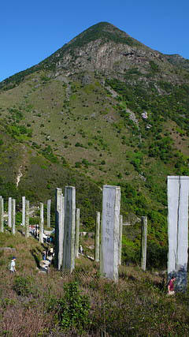
信仰と娯楽のごった煮テーマパークと化した寶蓮寺。
私は知っている。かつてどこぞの国にもこのようなテーマパークが雨後の筍のごとく乱立し、そしてそのほとんどが悲惨な末路を辿ったことを。
何年か後にこのテーマパークが寂れ、そのあおりを受けて寺自体が閉鎖、なんて事にならないように頼みますよ。
帰りは再びロープウェイ。
おっ、海の中に人がいるぞ！
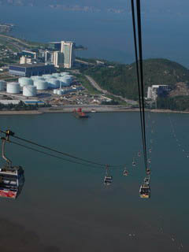 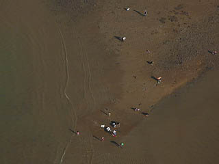
ああ、潮干狩りか…
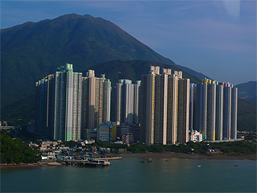
まるで模型かオモチャのような高層マンション群。
ホントに人が住んでるんだろうか、と思えるほど現実感のない光景だが、香港の郊外らしい風景だ。
最後におまけ
珍寺大道場 HOME